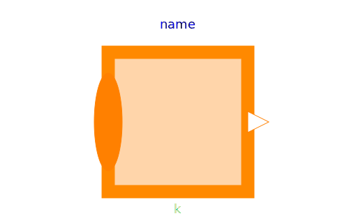
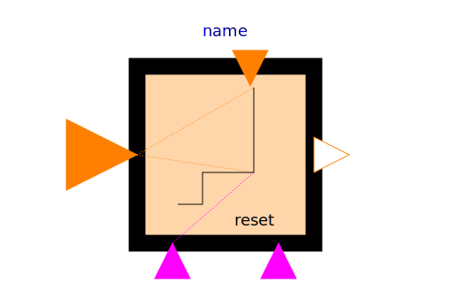

This package contains basic mathematical operations on Integer signals.
| Name | Description |
|---|---|
| Set Integer expression that is associated with the first active input signal | |
|  Sum | Sum of Integers: y = k[1]*u[1] + k[2]*u[2] + ... + k[n]*u[n] |
| Product of Integer: y = u[1]*u[2]* ... *u[n] | |
|  TriggeredAdd | Add input to previous value of output, if rising edge of trigger port |